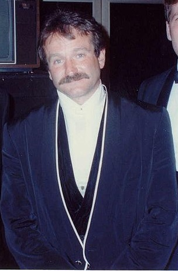

블루퍼(blooper, NG)는 촬영 중에 일어난 실수입니다. 대사 버벅임, 웃음 폭발, 소품 고장. 그런데 진짜 명장면은 종종 대본에 없던 순간에서 나옵니다.
로빈 윌리엄스는 《굿 윌 헌팅》(1997)의 벤치 독백 대부분을 즉흥 대사로 채웠습니다. 감독 구스 반 산트는 원래 대본을 지웠습니다.
말론 브랜도의 《대부》, 로버트 드 니로의 《택시 드라이버》 "You talkin' to me?" — 모두 즉흥이었습니다. 준비되지 않은 순간이 — 영화사가 되었습니다.

Robin Williams · 1990